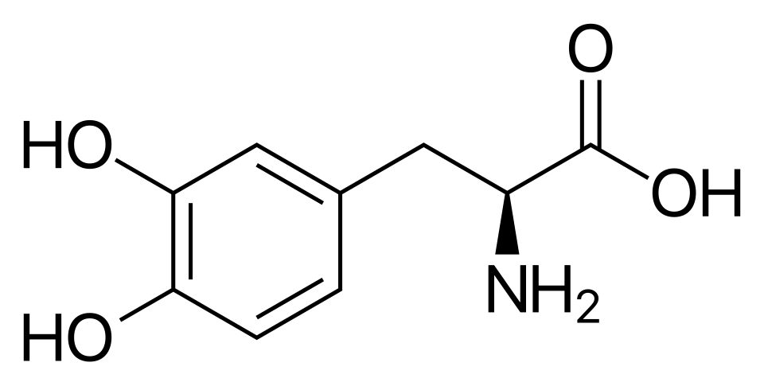

Replacing dopamine
In Parkinson's disease, the neurons that make dopamine in the substantia nigra are missing. Medicines aim to replace dopamine, mimic it or prevent it from being broken down. They control motor symptoms very well for years, although they do not slow the disease.
Levodopa
Levodopa has been the most effective medicine since it was introduced in the late 1960s, thanks to George Cotzias, and it remains the cornerstone of treatment. It is a precursor that the brain turns into dopamine. It is always combined with carbidopa or benserazide, which stop it being converted before it reaches the brain and reduce nausea.
- It improves slowness, stiffness and, to a lesser extent, tremor.
- It is taken several times a day. Protein in food competes with it for absorption, so some people do better taking it 30-60 minutes before meals.
- Side effects: nausea, dizziness on standing, sleepiness and, at high doses or in older people, confusion or hallucinations.
- It should not be delayed for fear that it will "stop working": it is now known that complications depend more on how long the disease has been present than on when treatment began.
Fluctuations and dyskinesias
After years of treatment, many patients notice:
- End-of-dose or wearing-off: the effect lasts less and symptoms return before the next dose.
- "Off" periods: times of freezing or marked slowness, sometimes unpredictable.
- Dyskinesias: involuntary swaying or twisting movements when the effect is at its peak.
They are managed by splitting levodopa into more doses, adding other medicines or moving to advanced therapies.
Other medicines
| Group | Medicines | What for |
|---|---|---|
| Dopamine agonists | Pramipexole, ropinirole, rotigotine (patch) | At the start or to prolong the effect; they cause more sleepiness, swelling and impulse control disorders (gambling, shopping, sex, food), which need monitoring |
| MAO-B inhibitors | Rasagiline, safinamide, selegiline | Mild effect at the start; prolong the effect of levodopa |
| COMT inhibitors | Entacapone, opicapone | Prolong the effect of each levodopa dose |
| Amantadine | Reduces dyskinesias | |
| Apomorphine | Injection or subcutaneous infusion | Rapid rescue from "off" periods |
| Anticholinergics | Biperiden, trihexyphenidyl | Tremor in young people; avoid in older people because of confusion |
| Istradefylline | Adenosine antagonist for "off" periods (not in all countries) |
Advanced therapies
When fluctuations cannot be controlled with tablets:
- Deep brain stimulation of the subthalamic nucleus or globus pallidus.
- Continuous levodopa infusion: as a gel through a tube into the intestine, or foslevodopa-foscarbidopa under the skin with a small pump (since 2023).
- Subcutaneous apomorphine infusion.
- Focused ultrasound for tremor and, increasingly, other symptoms.
Treating non-motor symptoms
- Constipation: fibre, water, exercise, laxatives.
- Orthostatic hypotension: review medicines, more water and salt, compression stockings, midodrine or droxidopa.
- Depression and anxiety: antidepressants and psychological support.
- Hallucinations: review medication, quetiapine, clozapine or pimavanserin.
- Dementia: rivastigmine. See medicines for dementia.
- Sleep: melatonin or clonazepam for REM sleep behaviour disorder.
Tips
- Punctuality: take doses at exactly the right time.
- Do not stop suddenly: abrupt withdrawal can cause a serious condition similar to neuroleptic malignant syndrome.
- On hospital admission, bring your schedule and ask for it to be followed; avoid medicines that block dopamine, such as haloperidol or metoclopramide.
- Combine treatment with regular physical exercise.
Sources
- Armstrong MJ, Okun MS. Diagnosis and treatment of Parkinson disease: a review. JAMA. 2020;323:548-60.
- Fox SH, et al. International Parkinson and Movement Disorder Society evidence-based medicine review: update on treatments for the motor symptoms of Parkinson's disease. Mov Disord. 2018;33:1248-66.
- Verschuur CVM, et al. Randomized delayed-start trial of levodopa in Parkinson's disease (LEAP). N Engl J Med. 2019;380:315-24.
- Soileau MJ, et al. Safety and efficacy of continuous subcutaneous foslevodopa-foscarbidopa. Lancet Neurol. 2022;21:1099-109.
- NICE. Parkinson's disease in adults (NG71).